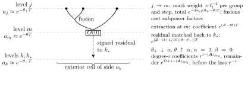

IThe theorem and the architecture of its proof 4
1The result 4
1.1Proof status 6
1.2Earlier work and the method 6
1.3Reading guide 8
1.4Notation and conventions 8
2Definitions 9
2.1The gauge group and the Wilson measure 9
2.2Wilson families and their correlations 10
2.3Local fields 12
2.4Euclidean properties 14
2.5Field spaces and phases 15
2.6Wightman theories 15
2.7The trace and product statements 16
3The main theorem 17
4Strategy of the proof 19
4.1Why the ultraviolet induction closes 19
4.2Tuning, uniqueness and convergence 23
4.3Rotations 24
4.4Phases and reconstruction 25
4.5The trace 25
5The renormalization group 26
5.1Scales and the block map 26
5.2The density and its norms 28
5.3The inductive step 31
5.4Multiscale trajectories 32
5.5Local fields under blocking 34
5.6Uniform bounds and the fixed-volume limit 35
6The continuum limit, stress, phases, trace and products 36
6.1The volume limit and the field calculus 36
6.2Stress and rotations 38
6.3Phases and reconstruction 41
6.4Trace and products 43
7Deduction of the main theorem 46
8A weaker existence statement 47
8.1Hierarchy data and the conditions Q0–Q6 48
8.2A generalized free-field example 49
8.3Conventions for hierarchy data 51
8.4An averaged countertest 52
9Constants and order of choice 52
Index of notation 54
IIProofs 57
10Local polynomial fields 57
10.1Labels, test holonomies and the Taylor map 58
10.2Taylor-normalized sections 59
10.3Small-field bounds 61
10.4Auxiliary equation sections 62
10.5Example: the curvature square 66
11Gauges and block integration 67
11.1The block kernel 68
11.2Free quadratic forms 72
11.3The stationary background and Gaussian coordinates 79
11.4Inverse, vertex and Ward estimates 85
11.5The local large-field energy 93
11.6Sector Gaussian integration 100
12Path actions and the one-loop coupling 112
12.1Curvature coordinates and the path action 112
12.2Fourth-order matching 114
12.3The determinant comparison 119
12.4The one-loop coefficient 122
13Activities and the inductive step 129
13.1The local expansion 132
13.2Local quadratic subtraction 150
13.3Forced fusion, activity bounds and the reset 152
13.4Continuity at fixed volume 158
13.5The Wilson start 159
13.6The specified recursion 161
13.7Weighted analytic estimates 163
14Trajectories, marked fields and ultraviolet convergence 177
14.1Trajectories and tuning 178
14.2Marked fields and volume-uniform estimates 185
14.2.1One marked insertion 185
14.2.2Chessboard seminorms and replicated sources 192
14.2.3Negligible errors and local matching 200
14.2.4Equation identities and coefficient corrections 204
14.2.5Comparison with free fields 207
14.2.6Bounds for lattice differences 217
14.2.7Bounded approximations 220
14.3Full ultraviolet convergence 224
15Infinite volume and field calculus 231
15.1Volume limits 231
15.2Separated cells and negligible errors 233
15.3Quotient fields 234
15.4Euclidean properties 237
15.5Repeated reflected words 238
16Free fields, Ward identities and rotations 239
16.1Free fields 240
16.2Lattice inputs 247
16.3Free comparison and the conserved line 254
16.4Coordinate reflection spaces and spectral estimates 257
16.5Ward identities and rotations 263
17Phases and reconstruction 270
17.1Compression and phases 270
17.2Reconstruction 276
18The trace law and non-free comparisons 284
18.1Trace and spectrum 284
18.2Precise non-free comparisons 301
19Products and contact subtractions 305
19.1Products and nested clusters 310
19.2Contact subtractions 323
References 332
This section proves Theorems 6.20 and 6.21. The coefficients of the product expansion are read off by probes. A finite family of probe correlations distinguishes the fields of a fixed degree: two fields of \(F_j\) with the same correlations against every probe are equal. Applied to a cluster of insertions, the probes return finitely many numbers, and a fixed linear reconstruction map, a decoder, returns a field of \(F_j\); on the probe values of a single field it returns that field. Lower degrees are removed before the next degree is read. The probes are chosen once, before the spectators and the phase, and the coefficients are computed from the mixed table; hence they depend on the cluster alone. The remainder is bounded in the commutative compression algebra \(\mathfrak{A}_0\) of Lemma 17.1 before a character is evaluated, and a norm bound in \(\mathfrak{A}_0\) bounds every character and the mixed vacuum. The coefficients do depend on the prescription, that is, on the table and the probes chosen here; Theorem 6.20 concerns this one coefficient system.
For two fields \(A, B\) of degrees \(d_A, d_B\) at \(x\) and \(0\), with center \(0\) and \(|x| \asymp r\), the expansion tested against spectators reads
with \(|c_{j, \lambda} | \leqslant r^{j - d_A - d_B - \varepsilon}\) and \(|\mathcal{R}_D^{\zeta} | \leqslant r^{D + 1 - d_A - d_B - \varepsilon}\) for small \(r\); \(O_{0, \lambda}\) is a nonzero multiple of the unit. For \(D + 1 < d_A + d_B\) the remainder bound still permits growth as \(r \to 0\); what increases with \(D\) is its order, and once \(D \geqslant d_A + d_B\) (with \(\varepsilon < 1\)) the remainder tends to zero. Nothing is asserted about a series in \(D\). The expansion goes back to Wilson [34]; Fröb and Holland prove its existence for Euclidean Yang–Mills theory to all orders in perturbation theory [13]. The expansion here is nonperturbative, at each finite truncation, with one coefficient system for every phase.
The lattice estimate starts from the signed local and graded quotient bounds of Lemmas 19.1 and 19.2. Each insertion carries a nilpotent external field with a weight. Blocking loses mark weight when insertion points approach one another; grouping nearby markers bounds this loss by a power of the ratio of insertion and fusion scales (Figure 19). Taylor subtraction and transport of the coefficient back to a coarser level produce one field and a small remainder, whose chessboard seminorm reflection positivity converts into a norm bound in \(\mathfrak{A}_0\). Derivative induction removes the restriction to grid points; tree induction allows several clusters to shrink at independent rates. The nested and integrated forms (Lemmas 19.13–19.14 and Remark 19.15) are not used in the proofs of Theorems A and B. The contact extension of Section 19.2 is defined from the continuum correlations at distinct points, not as a lattice limit at coincident points; the lattice bounds of Lemma 19.9 make its shell sums converge.
Throughout, the lattice insertions and quotient fields are those of Definitions 2.8 and 2.12; inclusions and derivatives are those of Lemma 15.5. The rotations \(R_j (h)\) are those of Lemma 16.17. Write \(|\boldsymbol{A}|_{\deg} = \sum_i \deg A_i\) and \(\zeta \in \textsf{X} \sqcup \{ \text{mix} \}\), as in Definition 2.19.
The lattice replacement and its continuum consequences below use the full marked-source propagation of Lemma 14.14, including the stronger anchored higher-mode estimate and the stopping-level restart at support exponent \(98\) not yet established there. The quotient and operator bounds also use the same-sample guarded comparison and actual graph-operator continuity identified in Section 15. Thus Lemmas 19.8 and 19.9, and the OPE and contact conclusions derived from them, are conditional on those inputs for the selected family.
We first establish two estimates needed when the field to be extracted varies with the cutoff. Throughout this subsection, a local marked expression has the form of Definition 14.5 and the regularity, zero radial jets and forced supports of Lemma 14.9. Write
The last quantity is the weighted remainder mass of Lemma 14.7. Fix an output degree \(t\). The diagonal rescaling \((\textsf{d}_i x)_{\alpha} = \ell_i^{t - \deg \alpha} x_{\alpha}\) accounts for the engineering degrees inside \(V_t\). Write \(C_i = C^{\text{col}}_{J_i}\) for the column bound at level \(i\). A normalized column at level \(i\) is the local expression \(\mathfrak{c}_i (b)\) of Lemma 14.7 with coefficient vector \(b\); its coefficient map is \(\textsf{C}_i\), and its remainder bound is \(C_i \mu ((\textsf{C}_i b)^{\circ})\) by Lemma 14.7.
Let \(K_j \geqslant 1\) be the nondecreasing stage bound fixed before item 1 of Section 14.1. The degree rescaling above is the map \(\textsf{S}_L\) in the proof of Lemma 14.6. For an input coefficient \(v\) and remainder mass \(q\), its averaged marked estimate gives an output coefficient \(u\) and remainder mass \(r\) with
Here \(M_i\) is the leading polynomial map, fixes the unit, preserves
the nonconstant subspace, and satisfies \(\|M_i^{\pm 1} \| \leqslant
K_{J_{i + 1}}\). These estimates follow from
The column choice imposes the first inequality; the ratio choice imposes the other two. Stage growth gives \(J_{l + 1} \leqslant J_l + 1\).
The next estimate retains the signed difference produced by subtracting a column. A transported family on \([k_{\ast}, m]\) is a sequence of local marked expressions \(\mathfrak{c}_l (b_l) + R_l\), \(k_{\ast} \leqslant l \leqslant m\), in which \(R_l\) has coefficient zero and each term arises from the next finer one by one marked integration step of Lemma 14.6. Its measured coefficient is \(x_l = \textsf{C}_l b_l\), and \(r_l\) is its remainder bound. Its free affine parameter is a vector added to the column input at the finest level \(m\). Write \(q_{\text{fin}}\) for the combined coefficient and remainder bound of the original expression at \(m\), before this affine subtraction. In the next lemma, the interval \([k_{\ast}, m]\) is sufficiently late.
Lemma
(b) If \(x_{k_{\ast}} = 0\), then, for \(k_{\ast} \leqslant l \leqslant m\),
Thus a residual that starts with zero coefficient at the coarse end loses only the factor \(4 (1 + C_m)\) at the fine end, and gains \((a_m / a_l)^{1 / 8}\) at every coarser level.
Proof. The termwise remainder estimates and the Lipschitz bound in the proof of Lemma 14.6 control one step; the exact column identity of Lemma 14.7 keeps the densities exact; an induction along the interval turns the signed one-step inequalities into the discount.
Let \(R\) have coefficient zero and remainder bound \(q_0\). Its regular
terms have zero radial jets through \(t\), by the local format of Lemma
14.9; its forced terms retain their eligibility events. In
the marked integration of Lemma 14.6, the former gain an
inverse block factor before the connected sums, and the latter keep half
the forced suppression. The stage constants precede the ratio and its
entry threshold, so both resulting bounds \(C^{\text{loc}}_{J_{i + 1}} /
\ell_i + o_{\hat{\beta}_i} (1)\) are at most \(\ell_i^{- 2 / 5}\). Sum
the regular masses \(g_a\) and forced masses \(k_b / (\epsilon_{i +
1}^{\text{for}})^{1 / 2}\) before taking the output norm. Their sum is
at most \(q_0\). The termwise bounds in that proof, or its Lipschitz
estimate for the difference between a column plus \(R\) and the same
column, therefore bound the output coefficient and remainder by
\(\ell_i^{- 2 / 5} q_0\). The rooted clause of Lemma 13.5,
in the marked norm defined below, justifies termwise integration and
retains the exact density identity. The last inequality of
Write the fine affine family as \(\mathfrak{c}_{i + 1} (a + b) + R\), with \(b\) the free parameter. Set \(c = \textsf{C}_i^{- 1} z\) and replace it at the coarse level by
The coefficient of \(R'\) is zero, and \(\mathfrak{r}_i (R') \leqslant (1 + C_i) \ell_i^{- 2 / 5} q_0\). Linearity of the column density gives \(H (\mathfrak{c}_i (a + c + b)) + H (R') = H (\mathfrak{c}_i (a + b)) + H (Z)\). Together with the exact column identity of Lemma 14.7, this proves the asserted density identity for every \(b\), including all forced terms. The supports remain fixed in \(b\) by Lemma 14.7.
For the column alone use
For later use put \(U = \mu (u)\), \(Y = \mu (\textsf{d}_i v)\), \(K = K_{J_{i + 1}}\) and retain \(r, q\) for the remainder bounds. Applying \(M_i^{- 1}\) and using \(\mu (v^{\circ}) \leqslant Y\) gives
| \(\displaystyle Y \leqslant K [U + \epsilon_i (Y + q)], \qquad r \leqslant KY + \epsilon_i q \hspace{0.17em} .\) | (19.3) |
For an interval \([k_{\ast}, m]\), choose the free affine parameter to
cancel the coefficient at \(k_{\ast}\); this uses the invertibility of
\(\textsf{C}_{k_{\ast}}\). The signed residual then starts with
coefficient zero. In step \(l\) put \(K = K_{J_{l + 1}}\) and \(A_l = 32
(1 + C_l)^2\). Induct from \(k_{\ast}\) toward \(m\) on the cone
condition \(A_l \mu (x_l) \leqslant r_l\), which says that the
coefficient is small compared with the remainder bound; it holds at
\(k_{\ast}\) because \(x_{k_{\ast}} = 0\). Equation
In
The next estimate recovers the output-degree power after passing to the
quotient. Fix any norm on \(F_t\). Put \(\|v\|_m = \mu (x_m (v))\),
where \(x_m (v) = x_{N, p, m ; t} (v)\) is the transferred coefficient
of Definition 2.8. A refinement below is a nontrivial
refinement of the ordered cutoff limits
Lemma
| \(\displaystyle \text{dist}_{F_t} ([v], \jmath_{i - 1, t} F_{i - 1}) \leqslant C_{t, i} (m) a_m^{- (t - i)} \epsilon_{\text{bd}} \hspace{0.17em} .\) | (19.4) |
Here \([v] \in F_t\) is the class of \(v\), \(F_{- 1} = 0\), and \(m\) is sufficiently large.
A label that is small at level \(m\) is therefore, in the quotient and up to subpower factors, within \(a_m^{- (t - i)}\) times its size of the fields of degree below \(i\).
Proof. The triangularity of the
leading map proved in Lemma 14.6 separates high from low
engineering degrees; the marked bounds of Lemma 14.7
control the error; the physical quotient of Definition 2.12,
with the corrected inclusions of Lemma 15.5, identifies the
removed low-degree part with a lower field. In the notation of
The diagonal entries are the nonzero fine-to-coarse normalization factors. The full coefficient map differs from this leading map by the marked error. Write \(P\) for coordinate projection onto engineering degrees at most \(i - 1\), first assuming \(i > 0\). The leading map \(M_l\) and its inverse preserve \(\ker P\): triangularity gives preservation by \(M_l\), and injectivity on this finite-dimensional subspace gives preservation by its inverse. Consequently \(\mu (Px) \leqslant K_{J_{l + 1}} \mu (PM_l x)\). The degree rescaling expands \(Px\) by at least \(\ell_l^{t - i + 1}\), whereas it expands \(x - Px\) by at most \(\ell_l^{t - i}\). The marked error is bounded by \(\epsilon_l \mu (x^{\circ})\).
The two resulting estimates are
To obtain the first line, put \(Y = \mu (P \textsf{d}_l x_{l + 1})\).
The low-cone hypothesis \(\mu (x_{l + 1}) \leqslant C_{l + 1} \mu (Px_{l
+ 1})\) and \(C_{l + 1} \leqslant \ell_l\) give \(\mu (\textsf{d}_l x_{l
+ 1}) \leqslant 2 Y\). Applying the inverse leading map to the low
coordinates and using \(2 K_{J_{l + 1}} \epsilon_l (1 + C_{l + 1})
\leqslant 1\) gives \(Y \leqslant 2 K_{J_{l + 1}} \mu (Px_l)\). The full
coefficient is at most \(3 K_{J_{l + 1}} Y\), so \(64 K_{J_{l + 1}}^2
\leqslant C_l, C_{l + 1}\) gives both conclusions. In the second line
use \(\mu (\textsf{d}_l x_{l + 1}) \leqslant \ell_l^{t - i} \mu (x_{l +
1})\) and \(K_{J_{l + 1}} + 1 \leqslant C_{l + 1}\). These numerical
inequalities follow from
At the bare level take the plane \(PV_t\). Its transported image remains in the low cone by the first line. The map from this plane to its low coordinates at any level is injective by its expansion bound, hence onto \(PV_t\). Subtracting a transported vector with the same low coordinates at level \(m\) therefore leaves zero low coordinates and increases the full size by at most \(1 + C_m\). Repeat the subtraction at every next coarser level, applying the second line between subtractions. This gives a vector \(y_{N, p}\) in the transported bare low plane with
Allowing a fixed norm-equivalence factor, put \(\mathcal{J}_m = \prod_{l < m} C_{l + 1}\). The first-line expansion, iterated from the bare level, shows that bounded vectors \(y_{N, p}\) in this plane have bare coefficients bounded by \(a_N^{t - i + 1} e^{o (s_N)}\). Multiplying the same polynomial by \(a_N^{i - 1}\) instead of \(a_N^t\) therefore gives a degree-\((i - 1)\) local observable with subpower healthy derivative and all-configuration supremum bounds. Its stencil is unchanged. To match this observable to the selected lower-degree insertions, apply Lemma 14.18(i): it gives tame degree-\((i - 1)\) coefficients \(c_{N, p}\) whose insertions differ from these observables by a negligible error (Definition 14.17). Lemma 15.3 removes that error in every separated spectator test.
To pass to a physical lower field, apply Lemma 15.4 in
\(V_{i - 1}\) to the family \(c_{N, p}\), with the equation projections
\(\Pi_{N, p} = \Pi_{i - 1, N, p}\) of Lemma 14.19, taken
along \(N = \textsf{n} (j)\) and \(p = P (k)\), their limit \(\Pi_{i -
1}\) from
For \(i = 0\) no plane is removed. Iterating the reverse coefficient estimate of Lemma 14.7 gives \(\|v\| \leqslant \mathcal{J}_m (a_{m_{\text{ref}} (t)} / a_m)^t \epsilon_{\text{bd}}\) and hence the same bound in \(F_t\). Finally \(\log \mathcal{J}_m = o (s_m)\), since \(\log C^{\text{col}}_{J_{m + 1}} \leqslant J_{m + 1}^{- 2} \log \ell_m\) (Section 9) and by Lemma 14.2. Since \(C_l \geqslant 2\), \(G_m C_m \leqslant (\mathcal{J}_m)^3 C_0\). Thus \(\log G_m = o (s_m)\) as well. Fixed reference-spacing and quotient-norm factors are absorbed in \(C_{t, i} (m)\). No estimate depends on the refinement used to take the limits.\(\Box\)
A probe word is a fixed finite list of fields at distinct nonzero points. Correlating a field at the origin against such a word gives a linear functional on \(F_j\). The intersection of the kernels of all these functionals is zero, by the definition of \(\mathcal{N}_j\). Finite dimensionality therefore permits a finite separating collection.
Choose the probe functionals recursively. Given biorthogonal fields \(u_{\alpha}\) and probe functionals \(\ell_{\alpha}\) below degree \(j\), continue each \(\ell_{\alpha}\) to \(F_j\) by the same correlation formula; inclusions preserve that formula by Lemma 15.5. The retraction
allows a section \(s\) of the new quotient to be replaced by \(s - \jmath \textsf{t}_j s\). Lift a quotient basis with this section and realize its dual by finite combinations of probe functionals, which span \(F_j^{\ast}\). The enlarged system is biorthogonal. In particular \(\ell_{\alpha}\) vanishes on \(\jmath F_{\deg \alpha - 1}\). For \(j = 0\) take \(u_0 =\boldsymbol{1}\). Let \(\mathcal{P}_j\) be the union of the finite probe sets used through degree \(j\), with index \(\gamma\). Write \(\ell_{\alpha} (A) = \sum_{\gamma} m_{\alpha \gamma} S (A (0), B_{j, \gamma})\) in this finite collection.
Definition
With \(\text{ev}_j (A) = (S (A (0), B_{j, \gamma}))_{\gamma \in \mathcal{P}_j}\), it satisfies \(D_j \text{ev}_j = \text{id}_{F_j}\): it is a fixed left inverse of field evaluation. For a word \(w\) separated from these probes, set
This extracts a field from finitely many correlations using the fixed biorthogonal coordinates.
Here and below a word is a finite product of labelled insertions; sums of words are read linearly. Rotations act on every position and label, and conjugation acts on labels and scalar coefficients. Translation of a word by \(u\) is denoted by \(\tau_u\).
Definition
The Haar measure has mass one. Outside this domain set both maps to zero. At center \(o\), apply these formulas to \(\tau_{- o} w\). These averages impose rotation covariance and reality.
Let \(I_q A = A (0)\) for \(A \in F_q\). The inclusions \(\jmath_{i, j}\) identify the same field in different degrees.
Definition
For the chosen real basis \((O_{j, \lambda})_{\lambda \in \text{Ch}_j}\) of \(E_j\), let \(\omega_{j, \lambda} : E_j \to \mathbb{C}\) be its coordinate functionals and set
The recursion removes lower degrees before reading coordinates and is independent of arity and truncation.
In the first two degrees the recursion reads as follows. In degree zero, \(Q_0 = 1\): the degree-zero probes read the multiple of the unit line seen by the cluster. In degree one, \(L_{0, 1} = B_0 I_1\) reads the degree-zero part of a single degree-one field, and
This is the field read in degree one, minus the multiple of the unit that the degree-zero probes see in it. The degree-one coefficients are the coordinates of this difference in \(E_1 = \ker L_{0, 1}\).
The following splitting makes the coefficients a single choice for all later estimates.
Lemma
The degree-zero vector spans the unit line and need not equal the unit.
By Definition 19.5, all coefficients are fixed before spectators, states and truncations.
Proof. The biorthogonal construction preceding Definition 19.3 gives a reconstruction formula fixing every field of \(F_j\); the field calculus of Lemma 15.5 makes the old functionals compatible with the inclusions. Continuing an old functional means using the same finite correlations, since \(\iota_j \jmath_{q, j} = \iota_q\); no extension of a functional is chosen arbitrarily.
For \(i \geqslant q\), this reconstruction and the rotation and reality laws give \(L_{i, q} = \jmath_{q, i}\). Also \(L_{i, j} \jmath_{q, j} = L_{i, q}\) for \(i < q \leqslant j\): both sides evaluate the same single-field word before averaging. For all \(q \leqslant j\), induction in \(j\) now gives
| \(\displaystyle Q_j L_{j, q} = 0 (q < j), \qquad \sum_{i \leqslant j} \jmath_{i, j} Q_i L_{i, q} = \jmath_{q, j} \hspace{0.17em} .\) | (19.5) |
For \(q = j\) the second identity is the recursion; for \(q < j\),
compose that recursion with \(\jmath_{q, j}\) and use the compatibility
just proved and the induction hypothesis. In the same induction assume
\(Q_k F_k \subset E_k\) and \(Q_k = 1\) on \(E_k\) for \(k < j\).
Applying \(Q_i L_{i, j}\) to \(Q_j A\) then cancels its matching \(i\)
term; terms with \(k < i\) vanish because \(Q_i L_{i, j}\) vanishes on
\(\jmath_{i - 1, j} F_{i - 1}\), and terms with \(i < k < j\) vanish
because \(Q_k A \in E_k\). Thus \(Q_j F_j \subset E_j\). On \(E_j\), the
defining sum for \(Q_j\) is zero, so \(Q_j = 1\). Its kernel is exactly
\(\jmath F_{j - 1}\) by
For \(T \to \infty\) write \(f \preccurlyeq e^{bT}\) when, for every \(\tau > 0\), there is \(T_0\) such that for every \(T \geqslant T_0\) an ordered cutoff tail gives \(\|f\| \leqslant e^{(b + \tau) T}\), uniformly in the cutoff and volume on that tail. Thus the decaying quantity \(e^{- 2 T}\) has exponent \(- 2\): its upper bound allows the small loss \(e^{\tau T}\). Products add exponents and finite sums take their maximum. Factors of exponent zero are called subpower. A level \(k\) has height \(b\) when \(s_k / T \to b\); thus \(a_k = e^{- bT + o (T)}\). Lemma 14.2 supplies these levels by taking the first with \(s_k \geqslant bT\), or \(s_k \geqslant \sqrt{T}\) if \(b = 0\).
Insertions are carried through the integration by nilpotent external fields. This is the device used for observables by Bauerschmidt, Brydges and Slade, who add an external observable field to the interaction and truncate the algebra in it [5, Section 2.3]. A marker is one group of insertions in the reflected cells not yet fused with another; it is live while its weight is positive. To each marker \(\iota\) attach a commuting variable \(z_{\iota}\) with \(z_{\iota}^2 = 0\) and a mark weight \(w_{\iota} > 0\). In this finite scalar algebra put
Products of monomials with overlapping markers vanish, and the weights of disjoint markers multiply, so \(\|cd\|_{\text{mark}} \leqslant \|c\|_{\text{mark}} \|d\|_{\text{mark}}\). The coefficient of \(z_A\) in \(\rho \prod_{\iota} (1 + z_{\iota} O_{\iota})\) is \(\rho \prod_{\iota \in A} O_{\iota}\); by linearity, taking this coefficient commutes with integration of integrable terms.
If \(F_{X, A}\) is a coefficient with support \(X\) and marker set \(A\), its weighted majorant is
Here \(\|F_{X, A} \|\) is the derivative or forced majorant of Definitions 5.3–5.4; at a support ball use its anchored sum. The factors \(e^{\sigma \text{cov} (X)} \|F_{X, A} \|\) enter as \(v_a\) in Lemma 13.5. Only the marked norm is used submultiplicatively. A grouped coefficient carries the product of its live mark weights, denoted by \(\omega\).
For the marked expansion put
The fixed integer \(\nu_t\) bounds the local degree-\(t\) polynomial losses, and \(y_{t, l} C_l \leqslant 1\) at entry. The four factors pay respectively for support enlargement, regular transport, Taylor extraction and insertion normalization. Their logarithms and \(\log C_l\) are \(o (s_l)\). For an initial weight \(\varpi > 0\) at \(k_{\ast}\) define its later weights by
The marked entry choices require \(\phi_l \ell_l^{t + 1} y_{t, l} \leqslant y_{t, l + 1}\) for \(l \geqslant m_{\text{ref}} (t)\). This follows the zero-jet regular remainder through the integration.
Let \(B_l\) be the support radius and \(q_l\) the per-site logarithmic
bound
These quantities ensure that the marked stencils fit in the cell and bound its density normalization.
For a grouped coefficient at level \(m + 1\) of weight \(\omega > 0\), put
The terminal weight \(\varpi\) must satisfy
These conditions pay for extraction at \(m\) and for the transported residual, respectively.
Informally, after blocking down to level \(m\), a group of insertions of total weight \(\omega\) is replaced by one degree-\(t\) insertion at the origin, the matched field. The next lemma bounds its coefficient by \(2\mathfrak{E}_m\), and the chessboard seminorm of the replacement error in a level-\(k\) cell by \(2 N_k / \varpi\).
Lemma
Proof. The extraction is a Taylor
expansion in the norms of Definitions 5.3–5.4
and 2.8; Lemma 19.1 transports its residual to
\(k_{\ast}\); the majorants of Lemma 13.12, summed by the
rooted clause of Lemma 13.5 in the marked norm, bound the
cell integral. Divide a grouped coefficient by its available weight
\(\omega\). Extract its radial polynomial through \(t\) and write the
regular complement by the integral Taylor formula. The finite derivative
sums, coefficient conversion and remainder constants are at most
\(\Xi_m\) after the entry levels have been chosen: their logarithms are
bounded by stage constants and powers of \(\log \hat{\beta}_{m + 1}\),
whereas \(\log \Xi_m = \sqrt{\hat{\beta}_{m + 1}}\). Multiplication by
\(a_{m + 1}^t\) gives \(q^{\text{ext}}_m\). The factor four bounds the
polynomial and complement separately. Forced terms keep their original
majorants and the forced normalization in
The combined cost is at most \(2 q^{\text{ext}}_m\). Subtract the column matching the transported family at \(k_{\ast}\). Lemma 19.1 gives, for \(k_{\ast} \leqslant l \leqslant m\),
The factor \(4 (1 + C_m)\) multiplying \(2 q^{\text{ext}}_m\) includes
the finest residual and coefficient together. The entry requirement
\(\phi_l \ell_l^{t + 1} y_{t, l} \leqslant y_{t, l + 1}\) gives the
regular zero-jet gain: iterating \(\varpi_{l + 1} = \phi_l \varpi_l\)
yields \(\varpi_m \leqslant \varpi (a_m / a_{k_{\ast}})^{t + 1} y_{t, m}
/ y_{t,
k_{\ast}}\). The first condition of
In the nilpotent variables defined above, a marked polynomial is
measured by the sum of the absolute coefficients times the product of
their assigned weights. Consequently the coefficient with one residual
per cell is at most \(\varpi^{- 1}\) per cell times that sum. Summing
the unmarked majorants and dividing by the two positive density
normalizations bounds the integral per cell by \(N_k\). The singleton,
forced-profile, connected regular and eligible forced sums contribute at
most \(2, 1, 1, 1\) per cell, giving the additive constant five. Apply
this to the original local difference and the correction representing
its column, and use the triangle inequality for the chessboard seminorm,
obtained by expanding the reflected product and applying
To verify that \(k_{\ast}\) has the required height, let \(\mathfrak{n}_l = \max (1, q_l)\) bound the normalization cost. The entry choices satisfy
| \(\displaystyle B_{l + 1}^2 \leqslant 2 B_l^2, \qquad (\ell_l B_l^2)^4 \mathfrak{n}_{l + 1} = o (s_{l + 1}) .\) | (19.7) |
The level \(k_{\ast}\) exists since \(a_l B_l^2\) decreases by at least \(2 / 3\) at each step. If \(k_{\ast} = k\), the spacing ratio is one. Otherwise \(k_{\ast} = l + 1\), and minimality gives \(a_k / a_{k_{\ast}} \leqslant \ell_l B_l^2\). Therefore \((a_k / a_{k_{\ast}})^4 q_{k_{\ast}} = o (s_{k_{\ast}})\). Also \(0 \leqslant s_{k_{\ast}} - s_k = \log (a_k / a_{k_{\ast}}) \leqslant (a_k / a_{k_{\ast}})^4 \mathfrak{n}_{k_{\ast}} = o (s_{k_{\ast}})\). This proves \(s_{k_{\ast}} / s_k \to 1\) and \(\log N_k = o (s_{k_{\ast}})\). At height zero it still gives \(\log N_k = o (T)\). Finally \(\log \Xi_m = o (s_m)\) follows from \(\hat{\beta}_m = \bar{\beta} + \kappa_G s_m\) and \(s_{m + 1} / s_m \to 1\). The other displayed functions are fixed powers of \(\hat{\beta}\) or the subpower column cost of Lemma 14.2.\(\Box\)
Fix nonempty lattice labels \(v_{\iota} \in V_{d_{\iota}}\), let
\(n_{\text{cl}}\) be their number and put \(W = \sum_{\iota}
d_{\iota}\). Choose levels \(k, m, j\) of heights \(0 \leqslant \theta_-
< \theta < \theta_+\). The input points lie on the spacing-\(a_j\) grid,
in the centered level-\((m + 1)\) block \([- a_{m + 1} / 2, a_{m + 1} /
2)^4\), and their separation is at least \(B_j^2 a_j\). The
configurations belong to \(\text{Gen}_{n_{\text{cl}}}\), and all
stencils are interior to the level-\(k\) cell. These conditions hold
eventually for clusters of extent \(e^{- xT + o (T)}\) and reciprocal
separation at most \(e^{xT + o (T)}\), where \(\theta < x < \theta_+\).
The chosen \(k_{\ast}\) has height \(\theta_-\) by
Two contributions make up the exponential cost of bringing the cluster to level \(m\). The initial field normalization contributes \(W \theta_+\). Transporting at most \(n_{\text{cl}}\) groups from height \(\theta_+\) to height \(\theta\), at four powers of the scale ratio per group, contributes \(4 n_{\text{cl}} (\theta_+ - \theta)\). We therefore set
The support enlargements and the finitely many fusions contribute only subpower factors. Figure 19 shows the three scales and these costs.
 |
Figure 19. The three scales of Lemma 19.8. Markers start at the insertion resolution \(a_j\), are grouped when they cease to be \(B_l^2\)-separated, and reach level \(m\) as one group, where one degree-\(t\) field is extracted; the signed residual is matched backward to \(k_{\ast}\). Right: losses and gains up to subpower factors, at fixed truncation (no series in \(D\)). |
Lemma
The difference is interior. The bounds are uniform in cutoff and volume on that tail.
Proof. The insertions are expanded in the marked format of Definition 14.5 and Lemmas 14.7–14.9; Lemmas 19.1 and 19.7 supply the extraction once the markers form one group, and the steps below bound the mark weight lost before that. In the nilpotent variables defined above, the coefficient of their product in \(\text{dens} \hspace{0.17em} \rho_N \prod_{\iota} (1 + z_{\iota} O_{N, p} (v_{\iota}, x_{\iota}))\) is the product insertion times the density. Until level \(j\) the stencils are disjoint, so their marked integrations are separate.
Moving a marker to its representative through at most \(h\) cover balls gives
| \(\displaystyle \text{cov} (X \cup \{y_{\iota} : \iota \in A\}) \leqslant \text{cov} (X) + h |A| .\) | (19.8) |
If at most \(\mathfrak{N}\) representatives occupy a ball, shrinking each affected weight by \(\eta e^{- \sigma h}\) gives the original term times \(\eta^{|A|}\). In the anchored sum, terms incident on the old ball use its original majorant; any new incidence can be assigned to an old marker on the joining path. There are at most \(n_{\text{cl}}\) old markers for each new representative and \(\mathfrak{N}\) representatives. With \(\eta \leqslant [(1 +\mathfrak{N}) n_{\text{cl}}]^{- 1}\), the sum of the contributions from these assignments is bounded by the original majorant. Unmarked terms keep their supports. Hence the enlarged weighted series is bounded by the original majorant series of Lemma 13.12.
Choose one input index \(\iota_0\). At each level keep a maximal \(B_l^2\)-separated set of representatives containing the current representative descended from \(\iota_0\), and attach each discarded point to a retained neighbor. The distinguished input need not itself lie at the origin. By the centered-block hypothesis, every input has ancestor \(0\) at level \(m + 1\); in particular the retained representative has that ancestor, and the final group is extracted at \(0\). A fusion decreases the number of groups, so there are at most \(n_{\text{cl}} - 1\) fusions. No extra origin marker is introduced. The joining-cover bound can be taken as \(h_l = 16 [1 + \ell_l (B_l + B_{l + 1} + 1)^2]^4\). There are at most \(n_{\text{cl}}\) representatives in any ball. Set
with the inner minimum omitted if the interval is empty. Then \(\alpha_j / 8\) is at most the factor \(\eta e^{- \sigma h_l}\) required above at every fusion. The entry requirements of Section 9 and Lemma 14.2 give \((\sigma_{J_{l + 1}} + 1) h_l = o (s_l)\), so \(\alpha_j\) is subpower: split the maximum logarithmic cost into a fixed initial segment and a tail bounded by \(\tau s_j\), then send \(\tau\) to zero.
Between fusions the one-mark integration costs at most \(6 \ell_l \leqslant \ell_l^4\) in each weight. To derive this bound, let \(\mathfrak{m}\) be an incoming marked majorant. Apply the rooted clause of Lemma 13.5 coefficientwise in the submultiplicative marked norm, with the marked factor fixed. Separate the transported regular terms into the zero-jet local integration remainder, of total weighted mass \(p_l\), and the incoming regular contribution carried without Taylor subtraction.
Use the support conversion factor \(\mathcal{A}_l\) defined by
Exponentiating bounds this incoming mass by \(\mathcal{A}_l \mathfrak{m}\); the remaining half of the fine exponent is nonnegative. Item 2 of Section 14.1 imposes \(\mathcal{A}_l \leqslant \ell_l\).
The combined regular mass is thus at most \(p_l +\mathcal{A}_l
\mathfrak{m}\). Splitting a complex marked term into its real and
imaginary parts costs at most twice its majorant. For the forced terms,
let \(f_l\) denote their total contribution after this splitting and the
normalization in
With \(g\) groups remaining, their product weight at level \(l\) is consequently at least
| \(\displaystyle (a_j / a_l)^{4 n_{\text{cl}}} (\alpha_j / 8)^{n_{\text{cl}} (n_{\text{cl}} - g)} \prod_{\iota} w_{\iota} .\) | (19.9) |
Indeed a separated step multiplies the weight by \(\ell_l^{- 4 g} \geqslant \ell_l^{- 4 n_{\text{cl}}}\). A fusion to \(g' < g\) uses at most \(n_{\text{cl}}\) factors \(\alpha_j / 8\), whereas \(n_{\text{cl}} (g - g') \geqslant n_{\text{cl}}\).
At \(m + 1\) all representatives have the same ancestor. The initial
normalized-field weights can be chosen with \(\prod_{\iota} w_{\iota} =
e^{- W \theta_+ T + o (T)}\) by Lemma 14.7. Thus
| \(\displaystyle \varpi = \exp \{[(t + 1 / 16) (\theta - \theta_-) -\mathcal{Z}] T\} .\) | (19.10) |
The second condition of
We next state the bounds when the exterior distances also shrink. Write \(w = \prod_i A_i (x_i)\), \(W = |\boldsymbol{A}|_{\deg}\) and \(V = |\boldsymbol{B}|_{\deg}\). Consider families of configurations indexed by \(T \to \infty\). Suppose the cluster lies within \(e^{- \alpha T + o (T)}\) of \(o\), its pairwise distances are at least \(e^{- \alpha T - o (T)}\), and \(\alpha > 0\). Exterior points are at distance at least \(e^{- \beta T - o (T)}\) from every cluster point and \(o\), and mutually at least \(e^{- \upsilon T - o (T)}\) apart, where \(0 \leqslant \beta < \alpha\) and \(\upsilon \geqslant \beta\). The field lists are fixed, or range over fixed compact sets of coefficients. Call these conditions (G). Let \(u_{(i, \kappa)}\), \(\kappa\) ranging over the degree-\(i\) basis fields, be the biorthogonal fields of Section 19.1, and put \(w_o = \tau_{- o} w\). Set
Here \(P_h^{\text{raw}}\) is the projection of Definition 19.3, and \(M^0\) is the compression of Definition 6.12 and Lemma 17.1.
The following estimates retain the exterior distance powers needed for nested clusters and contacts.
Lemma
The final coefficients and tested remainder of Definition 19.5 obey the same respective bounds, in norm before state evaluation.
A degree-\(i\) coordinate thus costs the cluster degree less \(i\) at the cluster height \(\alpha\), and the remainder gains \((D + 1) (\alpha - \beta)\) from the difference of the cluster and exterior heights.
Proof. The proof converts chessboard seminorms into algebra norms by Lemma 17.2, applies Lemma 19.8 on grid configurations, removes the grid restriction by derivative descent with the calculus of Lemma 15.5, and then averages the reconstruction map. Write \(n_{\text{cl}} = |I_{\text{cl}} |\).
Step 1: chessboard seminorms bound algebra norms. Suppose a lattice difference has centered chessboard seminorm (Lemma 14.16) at most \(B_{\text{rt}}\), and the exterior insertions have chessboard seminorms at most \(B_{\text{rt}, l}\). Put the difference in a coarse cell and the exterior insertions in finer disjoint cells; their stencils fit by Lemma 14.11. Let \(U \in \mathfrak{A}_0\) be the corresponding compressed difference. The lattice paragraph after Lemma 17.2, with the moment identity of Lemma 17.1, gives for every \(n \in \mathbb{N}\)
| \(\displaystyle \int_{\textsf{X}} | \xi (U) |^{2 n} \hspace{0.17em} d \nu (\xi) \leqslant (B_{\text{rt}} \prod_l B_{\text{rt}, l})^{2 n} \hspace{0.17em},\) | (19.13) |
and Lemma 17.2 gives \(\|U\| \leqslant B_{\text{rt}} \prod_l B_{\text{rt}, l}\). The same argument bounds a word by the chessboard seminorms of its insertions, giving the crude exponent \(W \alpha + V \upsilon\) on the stated geometries.
Step 2: grid configurations. Consider the generic grid configurations defined above in a cluster of height \(\alpha > 0\). Choose \(0 < \theta_- < \theta < \alpha < \theta_+\), with exterior distance exponent \(\beta < \theta_-\), and \(\mathcal{Z}= W \theta_+ + 4 n_{\text{cl}} (\theta_+ - \theta)\). Apply Lemma 19.8 with an auxiliary degree \(t \geqslant D\). For each fixed cluster geometry the output coefficients are bounded at fixed \(m\); the reverse transfer inequality of Lemma 14.7 bounds them also at the reference level. Along a refinement of the ordered cutoff tails they converge to a field \(A^{\text{out}} \in F_t\). Step 1 bounds the replacement error by exponent
Testing the same difference against the fixed probes bounds the raw
coordinate errors. Reference-level coefficient convergence and Lemma 19.2 apply on this geometry-dependent refinement. The
degree-\(i\) raw coordinate annihilates \(F_{i - 1}\) by the
biorthogonality before Definition 19.3, and is a fixed
bounded functional on the quotient. With \(\epsilon_{\text{bd}}
\preccurlyeq e^{(\mathcal{Z}- t \theta) T}\),
Choose \(t\) large enough that \((t + 1 / 16) (\theta - \theta_-) \geqslant (D + 1) \theta\) and also large enough for every coefficient being tested. Exact reconstruction of \(A^{\text{out}}\) by the prescription separates the degrees \(i \leqslant D\) from \(D < i \leqslant t\). An omitted degree contributes at most
The low-degree coordinate errors satisfy the same bound, by the chosen auxiliary horizon. We have therefore proved grid exponents \(\mathcal{Z}- i \theta\) for raw degree-\(i\) coordinates and \(\mathcal{Z}- (D + 1) (\theta - \beta) + V \upsilon\) for the raw remainder.
Step 3: derivative descent. Run the crude, grid and derivative bounds uniformly over all characters \(\xi \in \textsf{X}\). The algebra \(\mathfrak{A}_0\) is commutative, so \(\|U\| = \sup_{\xi} | \xi (U) |\). The identities of Lemmas 15.5, 16.12 and 17.3 hold throughout any separated neighborhood: differentiating a cluster position replaces that slot by its positional derivative, also after compression and character evaluation. For each compact rounding segment, a common translation places the words in fixed slabs with positive buffers, so the slab norm identity applies along the whole segment. For the raw remainder this differentiates the varying field \(A_D^{\text{raw}} = D_D ((S (w_o, B_{D, \gamma}))_{\gamma})\) as well as the original cluster. Since the probes, decoder, center and exterior word are fixed, linearity gives
Consequently the derivative of the raw remainder is the raw remainder for the word with this differentiated slot. The center need not be distinct from the cluster points: the original word and the center-insertion word are separate correlations. Assign the differentiated slot degree \(d_i + 1\), even if its class vanishes or admits a lower-degree representative.
For suitable constants \(c_0, d_0\) independent of the input degrees, the crude bound has exponent \(\alpha W + c_0\) and the grid bound exponent \(\theta_+ W + d_0\). We descend in the total assigned input degree \(W\). The crude bound proves the desired estimate for all \(W\) with \((\theta_+ - \alpha) W \geqslant c_0 - d_0\), because \(\theta_+ > \alpha\). For the induction step, move the configuration to a generic level-\(j\) grid configuration a distance \(O (a_j)\) away. Since \(a_j = e^{- \theta_+ T + o (T)}\) and \(\beta < \alpha < \theta_+\), the entire intervening segment lies in a separated neighborhood with the same cluster and exterior exponents, and remains clear of the fixed probes; spectator–spectator distances do not change. The slot identity therefore applies at every point of the segment. For any fixed positive slack, failure of a uniform segment bound would give a violating sequence of segment points and characters, still satisfying (G), contrary to the induction hypothesis. The induction hypothesis and grid spacing give \(e^{[\theta_+ (W + 1) + d_0] T + o (T)} a_j = e^{(\theta_+ W + d_0) T + o (T)}\): the displacement error has exactly the required degree-\(W\) bound, for every slot and axis.
Step 4: limits. Now let \(\theta \uparrow \alpha\) and
\(\theta_+ \downarrow \alpha\), keeping \(\beta < \theta_- < \theta\).
Translation moves the origin to \(o\). This proves
Step 5: the coefficients of Definition 19.5. Let
\(A^{\text{raw}}_h \in F_h\) be the raw truncation at an auxiliary
degree \(h\). In every rotated probe correlation, the difference between
the cluster and \(A^{\text{raw}}_h (0)\) has exponent \((W - h - 1)
\alpha\). The marked norm bounds and multilinearity make
At fixed exterior distances the power-separated estimates become the bounds of Theorem 6.20. The parameters \(M_{\text{geo}}\) are nonnegative and the separation and error parameters are positive, as in Definition 2.19. For the algebra-valued remainder put
Here \(M^0\) is the compression of separated words of Definition 6.12 and Lemma 17.1; its characters and vacuum state give the phase and mixed remainders \(\mathcal{R}_D^{\zeta}\) of Definition 2.19.
Lemma
Proof. Apply Lemma 19.9 to Definition 2.19, with \(T = - \log r\), \(\alpha = 1\) and \(\beta = \upsilon = 0\). Every admissible configuration has these bounds on extent and reciprocal distances. If the claimed threshold failed, choose violating configurations at radii tending to zero. The estimate just proved along that sequence, with loss \(\varepsilon / 2\), eventually contradicts the violation with loss \(\varepsilon\): constants and subpower factors are absorbed by \(r^{\varepsilon / 2}\). Taking \(M_{\text{geo}} r < \delta_{\text{sp}} / 2\) also ensures separation.\(\Box\)
Proof of Theorem 6.20. Lemma 19.6 fixes the fields and coefficients of Definition 2.19 before spectators, state indices or truncation. The coefficient bound follows from the coefficient estimate of Lemma 19.9 by the contradiction argument in the proof of Lemma 19.10; its threshold depends only on the data of the coefficient. Character evaluation and the mixed vacuum are contractions on \(\mathfrak{A}_0\), so Lemma 19.10 gives the remainder bound with its own threshold. The argument bounds \(\mathcal{R}_D\) in \(\mathfrak{A}_0\) before state evaluation.\(\Box\)
A nested configuration retains leaf positions and internal centers, so it also describes partially replaced words. Call an internal vertex other than the root proper, and fix its truncation \(D_v \in \mathbb{N}\).
Definition
Spectators are \(\delta_{\text{sp}}\)-clear of every tree position and each other.
The recursion retains every leaf, including those above a neighboring truncation.
Definition
multiplying their coefficients and summing. At the root retain only \((q, \lambda)\), giving \(C^{\text{it}, \boldsymbol{D}}_{q, \lambda}\). The direct coefficient is \(C^{\text{dir}}_{q, \lambda} = c_{q, \lambda} (\boldsymbol{A}; z_{\text{leaves}}, z_{o_{\text{root}}})\). This compares successive and direct expansion.
For example, let a cluster \(v\) of leaves of total degree \(W_v\) first fuse at scale \(\varrho_v\), and let its output then fuse with the remaining leaves at the root scale \(r\). If \(v\) is the only proper internal vertex, then
The first factor is the size allowed for the direct coefficient; the second is the truncation gain at the inner fusion. For a general tree the errors from different vertices are added, as in the definition of \(\textsf{e}_{\boldsymbol{D}}\).
Fix the tree, leaf list, output \((q, \lambda)\), proper-vertex truncations, \(M_{\text{geo}} \geqslant 0\) and \(\eta, \varepsilon > 0\). No lower bound on the ratios \(q_v\) is imposed.
Lemma
Both expressions are smooth in neighborhoods of these geometries.
Proof. The estimates of Lemma 19.9 are applied vertex by vertex along a tree induction, after reducing to sequences whose scales have convergent logarithmic heights. Along any sequence of admissible radii and scales tending to the root collision, put \(T = \sum_{v \text{ internal}} \log (1 / \varrho_v)\). Eventually every summand is positive. After a subsequence, \(\log (1 / \varrho_v) / T \to a_v \geqslant 0\), with \(\sum_v a_v = 1\) and \(a_v \geqslant a_{\text{par} (v)}\). Set
We prove by induction on the tree that a direct output of degree \(q\) has exponent \(\mathcal{B}- qa_{o_{\text{root}}}\), and its error against the prescribed finite iteration has that exponent minus \(\gamma = \min_{v \ne o_{\text{root}} \text{ internal}} (D_v + 1) (a_v - a_{\text{par} (v)})\). With no proper internal vertices the two coefficients coincide exactly.
First flatten the edges \(u \to v\) with \(a_u = a_v\): combine their
grouping before making any field replacement. The word at \(v\) then
consists of original leaves in this equal-height component and outputs
from strictly finer children; its distinct positions are separated at
exponent \(a_v\) by the tree geometry. For a child with \(a_u > a_v\),
expand to an auxiliary horizon \(H_u\). The remainder exponent has the
improvement \((H_u + 1) (a_u - a_v)\) by
| \(\displaystyle \prod_{i = 1}^n X_i - \prod_{i = 1}^n Y_i = \sum_{i = 1}^n \left( \prod_{h < i} Y_h \right) (X_i - Y_i) \left( \prod_{h > i} X_h \right)\) | (19.14) |
justifies these successive replacements in every correlation and in every probe defining a coefficient. It is an identity of separated expressions, with their scalar coefficient factors retained.
For a fixed collection of child outputs \(j_u\), the child exponents
include \(- j_u a_u\), and the parent coefficient contributes \(j_u
a_v\). Their sum contains \(- j_u (a_u - a_v)\); the remaining leaf
weights telescope to \(\mathcal{B}- qa_{o_{\text{root}}}\). Nonnegative
output degrees therefore never increase this exponent. If the root
height is zero, apply the crude estimate to this root word of child
outputs; its finitely many field degrees cost exponent zero, while their
coefficients already carry the child contributions to \(\mathcal{B}\).
This proves the direct bound, by the preceding arbitrary-accuracy
replacements and the induction hypothesis. Remove auxiliary outputs
above \(D_u\). Each discarded term has at least one \(j_u \geqslant D_u
+ 1\) and thus gains at least \(\gamma\). Replacing the remaining direct
child coefficients by their iterated coefficients uses
The logarithmic exponent of \(\mathcal{Q}_{\varepsilon, q}\) is
Positivity follows because \(\sum_v a_v = 1\): if every displayed nonnegative term vanished, every \(a_v\) would vanish. The exponent of \(\textsf{e}_{\boldsymbol{D}}\) is \(- \gamma\). Thus the estimates with loss \(\varepsilon / 2\) imply the displayed bounds with loss \(\varepsilon\) and coefficient one along this sequence. A sequence of violations would have the subsequence just treated, a contradiction. This proves a threshold uniform in the scale vector, even when some scales decrease faster than every power of \(r\). The positions in each word evaluated by the recursion stay separated and, for small \(r\), clear of its finite rotated probe family. A center may coincide with a descendant appearing in a different word. The averaging integrands are smooth on an open neighborhood with that clearance; their derivatives are bounded on compact neighborhoods times \(O (4)\). Differentiating the finite sums and Haar integrals proves smoothness.\(\Box\)
For tested products, retain the original leaves at the root; only the degree of its output is truncated. Fix additionally the root truncation \(m \in \mathbb{N}\), a spectator list \(\boldsymbol{B}\) and \(\delta_{\text{sp}} > 0\).
Lemma
The same bound holds in the norm of \(\mathfrak{A}_0\) before evaluation in a character or the mixed vacuum.
Proof. The tree induction of Lemma 19.13
is run with the spectators kept in every replacement of Definition 2.19. Their reciprocal distances from every tree position and
from one another have exponent zero. They therefore add no term to
\(\mathcal{B}\). After the arbitrary-accuracy child replacements, the
root remainder estimate of Lemma 19.9 has exponent
\(\mathcal{B}- (m + 1) a_{o_{\text{root}}}\). When \(a_{o_{\text{root}}}
= 0\), apply the crude bound to the root word of child outputs after
these replacements. The child coefficient powers already account for
\(\mathcal{B}\); the finitely many root output fields and the spectators
cost exponent zero. The positive quantity \(\varepsilon A_{\ast}\) used
above again absorbs all finite sums and subpower factors. The
contradiction argument is unchanged. The norm estimate follows from
Remark
The first and last bounds also hold for the mixed state. Indeed, for
fixed \(r\) and \(\varrho\),
Property E7 alone gives some extension through the collision diagonals (see the discussion before Theorem 6.21). This subsection constructs a specific one, by explicit subtraction of normal Taylor jets of the test function read through contact projections, and proves its local order \((2 + |\boldsymbol{A}|_{\deg}) n\) on compact sets. For each retained field degree we subtract a jet of a different order, and partial collisions require the same operation inside each smaller cluster; absolute convergence follows by summing normal shells.
We work with finite sums of field words, identifying \(A (x)\) with \((\jmath_{d, e} A) (x)\) and imposing linearity in \(A\). Their product is concatenation. The correlation of a word is read only at distinct positions; elsewhere give it value zero. This convention is used inside the algebraic formulas below, before any integration. The underlying prescription and its fields are those fixed in Lemma 19.6; the finite probes chosen next are independent of its OPE probes.
Definition
Apply the averaging and reality formula of Definition 19.4 to this clipped word with the contact probes; extend linearly to sums, obtaining \(B_q^{\text{ct}}\). This extracts contact fields on a fixed region clear of its probes.
For contact expressions \(I_q A = A (0)\) still denotes a single field. Unlike the domain restriction in Definition 19.4, clipping here acts on each monomial before summing it.
Definition
The first term retains the degrees already chosen through \(q\); the second takes the new measurement and removes its component in \(\jmath_{q, q + 1} F_q\). In particular, \(P_{\leqslant q}^{\text{ct}} (o) [A (o)] = A\) for \(A \in F_q\).
Definition
These give the graded contact subtractions and their common range of separated evaluation.
The projections are defined before any test function or state. Their strata are the contact degree subspaces \(E_0^{\text{ct}} = F_0\) and \(E_q^{\text{ct}} = \ker T_{q - 1} \subset F_q\) \((q > 0)\). The proof of the next lemma shows that \(F_q = \jmath_{q - 1, q} F_{q - 1} \oplus E_q^{\text{ct}}\); these strata, not the complements \(E_q\) of Definition 19.5, carry the real bases of the contact construction.
Lemma
Proof. The inclusions, rotations and conjugation of Part I act as in Lemma 19.6. A ball centered at zero is rotation invariant. Haar invariance proves rotation covariance of \(B_q^{\text{ct}}\), and its reality formula proves conjugation covariance. These maps fix \(A (0)\): before averaging the reconstruction map returns \(R_q (h^{- 1}) A\), and after multiplication by \(R_q (h)\) it returns \(A\). The recursion gives
For the third identity, apply \(T_q\) to the recursion and cancel \(T_q B_{q + 1}^{\text{ct}}\); the fourth follows by iteration. By the second identity, \(1 - \jmath_{q - 1, q} T_{q - 1}\) projects \(F_q\) onto \(\ker T_{q - 1}\) along \(\jmath_{q - 1, q} F_{q - 1}\), which proves the splitting. Each stratum is invariant under conjugation and rotations. Lemma 19.6 gives real bases; choose the unit in \(F_0\). Covariance passes through the recursion, with translations following from \(\tau_{- (o + u)} \tau_u = \tau_{- o}\).\(\Box\)
We give the finite subtraction formula before proving its convergence. Fix \(\boldsymbol{A} \in \mathbb{F}^n\), put \(d_i = \deg A_i\), \(W = \sum_i d_i\), and choose
Lemma 19.21 uses only this single length \(s_{\ast}\).
Expand each input in the contact stratum bases using
Here \(n^{\perp}_h\) is the dimension of the normal space of \(\Delta_h\). Fix one smooth radial cutoff \(\chi (z) = \chi_0 (|z|^2)\), where \(\chi_0\) equals one on \([0, 1]\) and zero on \([4, \infty)\). The normal Taylor operator is
It subtracts only normal variables, leaving the centroid and all exterior variables as parameters.
An expression \(F \otimes U\) means the field expression \(F (x)\) multiplied by \((Uf) (x)\) when tested against \(f\). Products compose the test operators. On a monomial write \(F = F_h F_{h^c}\) for its factors in and outside \(h\). Let \(\textsf{R}_{h, q}\) replace the subword of \(F (x)\) on \(h\) by the field \(P_{= q}^{\text{ct}} (\bar{x}_h) F_h (x)\) at \(\bar{x}_h\), leaving its test operator unchanged.
For two insertions, \(h = \{1, 2\}\), the centroid \(o = \bar{x}_h\) and the relative coordinate \(x_1 - x_2\) parametrize \(\mathbb{R}^8\), and \(x_h^{\perp} = \tfrac{1}{2} (x_1 - x_2, x_2 - x_1)\). With \(F = A_1 (x_1) A_2 (x_2)\) the subtracted expression is
The retained field degree \(q\) determines how many normal derivatives of the test are subtracted. On a shell \(|x_h^{\perp} | \asymp \rho\), the degree-\(q\) component has size \(\rho^{q - d_h}\) up to a loss \(\rho^{- \varepsilon'}\), the Taylor remainder of \(f\) through order \(L_h - 1 - q\) is \(O (\rho^{L_h - q})\), and the shell has normal volume of order \(\rho^4\). If \(L_h > 0\), the two arms of the signed expression, the field minus its projected components times \(f\) and the projected components times the Taylor remainder, contribute \(O (\rho^{4 + L_h - d_h - \varepsilon'})\) per shell, with \(4 + L_h - d_h = 1\). If \(L_h = 0\), the projection sum is empty and the remaining arm has the same bound with \(4 - d_h \geqslant 1\). Thus for \(0 < \rho \leqslant 1\) the contribution is \(O (\rho^{1 - \varepsilon'})\), summable over dyadic \(\rho\) when \(\varepsilon' < 1\). The individual terms need not be integrable: for \(d_h \geqslant 4\) the term \(Ff\) alone is only \(O (\rho^{4 - d_h - \varepsilon'})\) per shell, so each subtraction must stay with the term it subtracts.
In general, define recursively
Singleton and empty full expressions are respectively \(A_i (x_i) \otimes 1\) and the unit. In a nested term, the parent Taylor operator acts first on the test and the child operators act afterwards: if \(b \subsetneq h\) are a child and its parent, with Taylor orders \(k_b, k_h\), the resulting test factor is
so the parent operator is written on the right. Operators on disjoint slot sets commute; no commutation is asserted for nested subsets. The recursion terminates because every child has fewer slots; expanding it gives forests of disjoint or nested collision subsets. This is a position-space forest formula. Subtracting a Taylor jet of the test function at a diagonal is, in the normal variables, the extension procedure of [7, Section 5.2, Theorem 5.3]; here the subtracted jets are paired with contact projections, and the recursion organizes the partial collisions.
For three insertions the expression before the total-collision subtraction is
with the test operators in each \(\mathcal{C}^{\text{ct}}\) retained. The total-collision subtraction is applied to this complete expression. Its nested terms have the form \(\textsf{R}_{\{1, 2, 3\}, q} \textsf{R}_{\{1, 2\}, q'} (A_1 A_2 A_3)\) with test factor \(\text{Tay}^{\perp}_{\{1, 2\}, k'} (\text{Tay}^{\perp}_{\{1, 2, 3\}, k} \hspace{0.17em} f)\). Where \(|x_1 - x_2 |\) is much smaller than the distance to \(x_3\), the child arms make the expression integrable in the normal variable of \(\Delta_{\{1, 2\}}\), and the parent arms then treat the total collision. Figure 20 shows both examples.
Before summing shells we need estimates for complete signed expressions after child subtractions. Normalize \(T \to \infty\) so that all separation heights lie in \([0, 1]\), and fix a finite set \(\mathcal{P}\) of position paths. A finite separated sum of cost \(c\) at height \(s\) has terms
with \(x_{\iota} \in \mathcal{P}\). This definition permits different terms to use overlapping subsets of \(\mathcal{P}\).
The parameter \(s\) describes the cluster separation scale \(e^{- sT}\), and \(c\) its total exponential growth bound. Membership in the class \(\mathbb{A}_s (c)\) defined next means that the signed expression can be replaced, to arbitrarily high accuracy in exterior correlations, by a finite separated sum with this bound. The exterior word may have internal separations as small as \(e^{- T}\), but it stays at distance at least \(e^{- sT - o (T)}\) from the cluster. The approximating sum is chosen before the exterior word and its cost.
Write \(\mathcal{U} \in \mathbb{A}_s (c)\) if it has a finite height-one representation of some finite cost and satisfies the following approximation property. For every \(L > 0\), there is a finite separated sum \(g\) of cost \(c\) at height \(s\), using \(\mathcal{P}\), such that for every \(c' \in \mathbb{R}\) and every exterior finite separated sum \(Y\) of cost \(c'\) at height \(1\),
| \(\displaystyle | S^{\zeta} ((\mathcal{U}- g) Y) | \preccurlyeq e^{(- L + c') T} .\) | (19.18) |
Every exterior path must be at distance at least \(e^{- sT - o (T)}\) from every path in \(\mathcal{P}\). The bound permits any varying character \(\zeta (T)\) and the mixed state. Scalar factors of rate \(b\) change the cost to \(c + b\).
The precision \(L\) is relative to the exterior: against an exterior sum of cost \(c'\) the error is \(e^{- LT}\) times the growth \(e^{c' T}\) of that sum. A fixed absolute precision would not do, because exterior sums of every cost occur: in a product \(\mathcal{U}\mathcal{V}\), the factor \(\mathcal{V}\) belongs to the exterior of \(\mathcal{U}\).
so that \(e^{- sT} = \rho\), \(e^{- uT} = R\) and \(e^{- (s - u) T} = \rho / R\). A product of fields of total degree \(w\) at the cluster points, with bounded coefficient, is a separated sum of cost \(c = w\) at height \(s\). The next lemma bounds its contact components and residuals; in these scales, and up to a subpower factor \(\rho^{- o (1)}\), its conclusions read
The residual cost follows by cancelling lower degrees. Expanding the
cluster at \(o\) gives, up to an error of any prescribed precision,
fields of degree \(d\) with coefficient rates \(c - ds\). The contact
identities
Suppose the paths in \(\mathcal{P}\) lie within \(e^{- sT + o (T)}\) and within \(2 s_{\ast}\) of a center \(o \in \mathcal{P}\). For contact projections assume \(2 s_{\ast} \leqslant \rho_q^{\text{ct}}\). Write \(I_q^o A = A (o)\) for insertion at this center. These fixed-distance requirements ensure that the contact probes are clear; the exponential distances determine the rates.
Lemma
Separated products add their costs; finite signed sums take their maximum. Coarsening from \(s\) to \(u\) without subtracting retains cost \(c\).
The projected degree-\(q\) component thus costs \(c\) less the Taylor gain \(qs\), and the residual through degree \(q\) gains \((q + 1) (s - u)\) when it is viewed from the coarser height \(u\).
Proof. The proof orders the
approximation precisions before applying the projections. Lemma 19.9,
including its uniformity on compact label sets, expands each
approximating term at the center; the telescope
First check products, which explains the strength of the approximation property. Let \(\mathcal{U}, \mathcal{V}\) have costs \(c_1, c_2\) and a separation at height \(s\). Suppose a height-one representation of \(\mathcal{V}\) has cost \(b\). Choose an approximant \(g\) to \(\mathcal{U}\) of precision \(L + b\). Its own height-one representation has some finite cost \(b'\). Next choose an approximant \(g'\) to \(\mathcal{V}\) of precision \(L + b'\). The order matters: the precision required of \(g'\) depends on the cost \(b'\) of \(g\), which is known only after \(g\) has been chosen. Then
has precision \(L\) against every permitted exterior sum. The product \(gg'\) has cost \(c_1 + c_2\), since its word positions are separated at height \(s\) and its scalar coefficient rates add. Iterate in a fixed order for more factors. Addition and subtraction follow by taking the maximum cost and making every approximation as accurate as required.
For \(u < s\), expand a finite separated approximant to \(\mathcal{U}\)
at \(o\) to an auxiliary degree \(H\). Applied to each term,
For \(s > 0\), approximate with exterior height zero. A contact probe of total degree \(p\) costs at most \(p\) at height one; raise the precision by \(p\). Compactness of \(O (4)\) makes this uniform over rotated and conjugated probes, so averaging preserves arbitrary precision. On a degree-\(d\) field the degree-\(q\) contact row is zero for \(d < q\) and is a fixed linear map for \(d \geqslant q\). Its rate is at most \(c - ds \leqslant c - qs\), proving the row bound. At \(s = 0\) test directly against the fixed clear probes: their positions have height zero and add no exponent. The same conclusion follows.
For the residual, use \(u < s\) and the single-point sum \(g\) just constructed. Every field of degree \(d \leqslant q\) cancels exactly under \(1 - I_q^o P_{\leqslant q}^{\text{ct}}\). For \(d \geqslant q + 1\) its coefficient rate at the outgoing height is \(c - ds\). Viewed at height \(u\), its cost is at most \(c - d (s - u) \leqslant c - (q + 1) (s - u)\). The lower fields produced by its contact projection obey the same inequality, since their degrees are at most \(d\). Thus \(g - I_q^o P_{\leqslant q}^{\text{ct}} g\) has the required cost. The exact error is \((\mathcal{U}- g) - I_q^o P_{\leqslant q}^{\text{ct}} (\mathcal{U}- g)\). The first term has arbitrary precision by choice of \(H\); the finite probes defining the second cost only finitely many additional exponents. Choose the precision to pay for them and for the requested exterior test. This proves the residual's approximation property. Its finite height-one representation follows from the initial one and the finite probe formulas. At \(u = s\) the row bound makes the projected finite sum have cost \(c\) at height \(s\), so subtraction retains that cost directly.\(\Box\)
The extension and its order are proved together.
Lemma
For every \(f \in C_c^{\infty} (\text{Conf}_n)\), \(\mathfrak{D}_{\boldsymbol{A}}^{\zeta} (f) = \int f (x) S_n^{\zeta} (\boldsymbol{A}; x) \hspace{0.17em} dx\).
Proof. We prove absolute integrability of the complete subtracted expression on every compact set, with a finite test seminorm, in four steps. We keep each contact subtraction with the term it subtracts; Lemma 19.20 bounds the resulting signed expressions; normal Taylor vanishing and an induction over partial collisions make the dyadic shell sum converge; a partition of unity covers an arbitrary compact set.
The contact probes, decoder, apertures and radial cutoff are those fixed
above on the same constructed family, refinement and mixed table as the
OPE prescription. With \(r_{\ast} = \min (1, \delta_W^{\text{pres}})\)
and \(s_{\ast} = r_{\ast} / 4\), the recursion
Step 1: prepare the tests before localization. At a group \(h\), reorganize the full expression as
These are identities of field expressions with test operators; individual unsubtracted summands need not be integrable. Every nonzero Taylor term lies within \(2 s_{\ast} \leqslant r_{\ast}\) of its diagonal, so its projection has the required contact-probe clearance. For the first arm use the prepared test \(f\); for the degree-\(q\) arm use the prepared test \((1 - \text{Tay}_{h, L_h - 1 - q}^{\perp}) f\). Subdivide this prepared test before applying the child operators. A partition of the original configuration alone would not suffice: centroids of two disjoint child groups can coincide even when all original points are distinct.
The following localization identity is used at every descent. Let \(\pi\) partition a group into blocks and let \(\psi\) be supported where the positions in different blocks are distinct. On a test \(g\), the full expression localized as \(\Pi^{\text{full}} (\psi g)\) equals the product of the full expressions of the blocks, applied to \(\psi g\). The corresponding punctured identity holds for a proper partition. To see this, expand the finite partition recursion. In each forest term choose an outermost collision set meeting two blocks. Every ancestor of it would also meet two blocks, so it is maximal in that forest. Its Taylor operator therefore acts first on the masked test, up to commuting disjoint operators. Its collapse diagonal misses the support of \(\psi\), so its jet of \(\psi g\) vanishes. Removing these terms gives the identity without commuting a mask through a nested Taylor operator. Crucially, the multiplication by \(\psi\) is to the right of the child operators: it acts on the already prepared test, not on the unprocessed original test. The same identity holds when an enclosing projection is retained as part of the reader.
Step 2: one shell and its test. On a normalized chart, suppose the current partition is \(\pi\), let \(D = n - | \pi |\), and give a nonsingleton block \(h\) parent scale \(R_h\) and normal-shell radius \(\rho\). Put \(t = \rho / R_h\) and \(n_h^{\perp} = 4 (|h| - 1)\). The equality classes of a point on the normalized normal annulus form a proper partition. For this partition the finitely many centroids of nonempty subgroups in different blocks are distinct; continuity preserves their positive separation in a neighborhood. Compactness gives a finite smooth angular cover by such neighborhoods. On each chart, the positions and descendant centroids belonging to different new blocks have a common positive separation at the shell scale; only these cross-block separations are used. The localization identity of Step 1 then replaces the punctured expression on the prepared test by the product of the new blocks. Collisions of centroids within one block are left for a later descent, and are not assumed away. For a fixed proper descendant forest, compositions of its nested and disjoint centroid collapses give finitely many jet-evaluation maps. Each leaves distinct maximal proper blocks. Equality of the centroids of any such pair is a proper linear null set. Outside the finite union of these sets, every relevant jet site avoids its total-collision locus. The dyadic masks sum locally to one there, so a sufficiently long partial sum agrees with the prepared test on a neighborhood of every required site, including the Taylor halo. Sum the bounds of the signed localized pieces in \(L^1\) first; their almost-everywhere reassembly then identifies the limit with the original finite recursion.
The induction carries a reader estimate, not a pointwise norm of the reader. On a logarithmic profile in the current closed chart, a block input \(\mathcal{U}_b \in \mathbb{A}_{s_b} (c_b)\) uses the centroid paths of the nonempty subsets of \(b\). If \(B = e^{bT + o (T)}\) is the positive monomial bound, the invariant is
| \(\displaystyle \left| \mathcal{D}_T \hspace{-0.17em} \left( \prod_{b \in \pi} \mathcal{U}_b \right) \right| \preccurlyeq e^{(b + \sum_{b \in \pi} c_b) T},\) | (19.20) |
for the displayed grouped inputs, with the state and enclosing
projections already retained by the reader. Admissibility in
\(\mathbb{A}_s (c)\) is itself tested against separated exterior sums at
their stated exterior cost. At the initial chart the groups have height
zero and a fixed positive cross-palette margin. With \(B = 1\), the
reader is the same mixed or phase evaluator: separated approximants have
the sum of their rates, and
Let \(d_h = \sum_{i \in h} d_i\). The rescaling to this shell multiplies volume by \(t^{n_h^{\perp}}\) and the incoming field factor by \(t^{- d_h}\). On a degree-\(q\) arm write \(k = L_h - 1 - q\). Taylor's integral remainder, after rescaling the prepared test and its mask, has the factor
Each current block has normal width bounded by a fixed multiple of its comparison radius, and each nonsingleton comparison radius is \(O (s_{\ast})\). A projected arm is read in the old test support or its Taylor halo, where the normal collapse lies in that support and \(|x_h^{\perp} | \leqslant 2 s_{\ast}\). Both retain the contact aperture. Normal displacement fixes the centroids of enclosing and exterior blocks. For sufficiently small \(t\), the cutoff is one because \(\rho / s_{\ast} \leqslant Ct\); the integral remainder gives the near factor above. On ratios bounded below, a uniform jet bound gives the same estimate with a larger constant. For \(t > 1\), nonempty projected shells have \(\rho = O (s_{\ast})\), so the rescaled cutoff derivatives are bounded and the degree-\(k\) polynomial gives \(t^k\). For the residual arm take \(\tau (t) = 1\); it remains in the original support, so \(t\) is bounded and its logarithmic child height is at least its parent height. Thus
| \(\displaystyle t^{n_h^{\perp} + g - d_h} \tau (t) \leqslant C \min (t, 1) \quad (0 < t \leqslant 1), \qquad t^{n_h^{\perp} + g - d_h} \tau (t) \leqslant C \quad (t > 1) .\) | (19.21) |
Indeed, for a projected arm \(n_h^{\perp} + q - d_h + k = 0\), while for a residual \(n_h^{\perp} + L_h - d_h \geqslant 1\). If \(L_h = 0\) there is no projected arm and the latter inequality still holds. The rescaled angular and annular masks have uniformly bounded derivatives of each fixed order.
Step 3: nested shells and summation. Choose \(\gamma > 0\) so small that \((3^n + 1) \gamma \leqslant 1\). For a current partition \(\pi\) allocate the loss \(\lambda_{\pi} = 3^{n - | \pi |} \gamma\) to each previously introduced shell radius. A proper splitting to \(\pi'\) gives \(2 \lambda_{\pi'} + \gamma \leqslant \lambda_{\pi}\). The induction estimate keeps the determinant of the current rescaling, the field powers \(\prod_{b \in \pi} R_b^{- d_b}\), the bound for the inherited reader, and the product of the old radius losses \(r^{- \lambda_{\pi}}\). The reader includes the projections and the state already selected; the factor \(B\) is the monomial bound in the scale-profile invariant, not a pointwise operator norm. At terminal singleton evaluation, this invariant gives an ordinary bound uniform over the finite normalized charts and remaining shell choices. To see the required uniformity, suppose the bound with a fixed positive loss in each radius failed by \(e^m\). Put \(T = m + \sum_r (- \log r)\) and pass to a convergent vector of normalized heights \(s_r = (- \log r) / T\) and \(\delta = m / T\). Then \(\delta + \sum_r s_r = 1\), so \(\delta + \lambda \sum_r s_r > 0\) for every fixed loss \(\lambda > 0\). The reader estimate applies on this profile, including zero and equal heights, and its upper rate contradicts the violation. Thus the same finite constants work before the shell sums.
For the new shell,
The reserve in \(\lambda_{\pi}\) absorbs this parent factor, including the inherited reader's loss. Thus one fixed shell contributes at most \(C \rho^{\gamma}\) times the incoming envelope. The induction envelope also retains a factor \(2^{- j_b \gamma}\) for every already fixed shell \(j_b\) in a disjoint current block. These factors persist when \(h\) is split, and the constant is independent of their indices. Each refinement increases the number of blocks, so the induction ends at singletons. With \(\rho\) dyadic, \(\sum_j 2^{- j \gamma} < \infty\); the product of the retained factors permits the finite iterated sums. The sums are of the complete signed arms after their tests have been prepared and localized, not of the individual unbalanced forest terms.
At one descent the Taylor remainder and masks use at most \(L_h + 1 \leqslant W + 2\) test derivatives. Since the number of further refinements is at most \(n - | \pi |\), the required derivative order at that stage is at most \((W + 2) (n - | \pi |)\); in particular \((W + 2) n\) suffices from the root. The localization and shell induction apply to the fixed contact probes, decoder, apertures, cutoff and full recursion specified above.
Step 4: the distribution on an arbitrary compact set. Cover a given compact set by finitely many small closed patches, including patches outside the total-collision subtraction range. On each, choose initial blocks with positive across-block centroid margins and within-block normal width at most \(r_{\ast}\). First multiply the original test \(f\) by a subordinate smooth partition of unity, and apply the localized splitting to these tests. Within each block apply Steps 1–3, localizing each newly prepared test in its turn. The Leibniz rule combines the bounds. As in Step 3, each descent costs at most \(W + 2\) derivatives and there are at most \(n\) descents. We obtain
Define \(\mathfrak{D}_{\boldsymbol{A}}^{\zeta} (f)\) by this integral.
Absolute convergence preserves complex linearity, and
For \(f \in C_c^{\infty} (\text{Conf}_n)\), every normal jet on a
collision diagonal vanishes. Each nontrivial term of
Proof of Theorem 6.21. Definitions 19.16–19.18 fix the contact projections on the prescription of Lemma 19.6, and Lemma 19.19 gives their bases. Lemma 19.21 gives the distribution, its local order, and its agreement with the separated correlations.\(\Box\)
The conclusions of Theorem 6.21 assert neither uniqueness, positivity of the extension nor contact Ward identities. Estimates along general collision subspaces are not stated here and are not used in Theorem B.